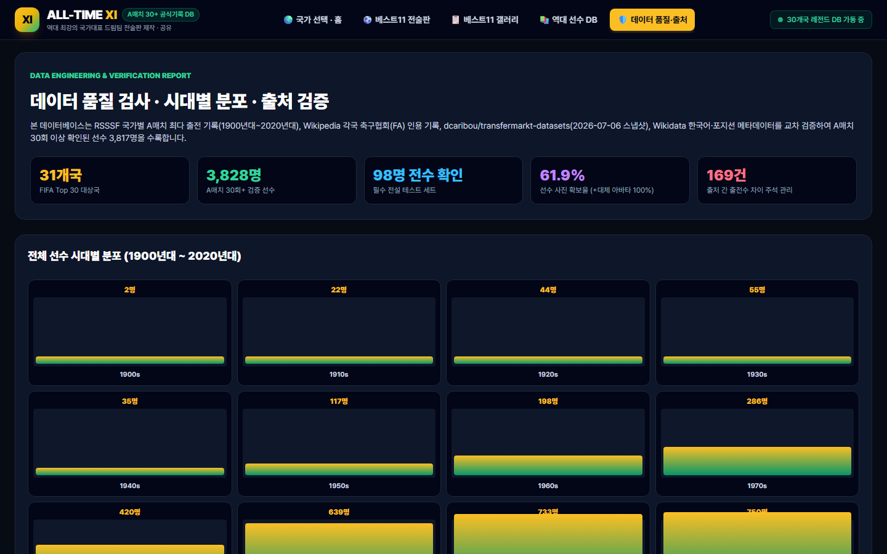

이런 서비스입니다
"역대 최강의 베스트 11은 누구인가"는 축구 팬이 가장 오래 싸워 온 질문입니다. 펠레와 마라도나, 지단과 메시를 한 팀에 세울 수 있다면 어떤 11명을 뽑을까요? 같은 질문에 답이 하나일 수 없다는 점이 이 프로젝트의 출발입니다.
올타임 베스트 11은 국가별 A매치 30회 이상 출전 선수 데이터베이스 위에 전술판을 올렸습니다. 나라를 고르고, 포메이션을 정하고, 각 포지션을 눌러 선수를 배치하면 나만의 역대 최강 팀이 만들어집니다. 포지션을 누르면 A매치 최다 출전 순으로 추천 선수가 나오고, 직접 검색해서 넣을 수도 있습니다.
기록의 기준도 분명히 밝힙니다. 비공식 클럽·선발팀 친선전은 제외하고 FIFA·RSSSF가 공인한 성인 A매치 기록만 씁니다.
선수 사진은 일부만 확보했고 나머지는 대체 아바타로 보여 줍니다. 출처에 따라 출전 수가 다른 경우는 주석으로 관리합니다.
무엇을 할 수 있는가
FIFA 랭킹 TOP 30(기준일 2026-10-07) 나라 가운데 하나를 고릅니다. 나라마다 수록 선수 수가 표시되고, 대륙(UEFA, CONMEBOL, CONCACAF, CAF, AFC)으로 걸러 볼 수 있습니다.
4-3-3, 4-2-3-1, 4-4-2, 4-1-4-1, 3-5-2, 3-4-3, 4-2-2-2 중 포메이션을 고르고 포지션마다 선수를 배치합니다. 한 번에 레전드 11명을 자동 배치하는 버튼도 있습니다.
팀을 저장하고, 링크로 공유하고, 고해상도 PNG 이미지로 내려받을 수 있습니다.
이용자가 저장한 베스트 11과 국가별 올타임 드림팀을 모아 봅니다. 전술판으로 불러와 고치거나 이미지로 미리 보고 카카오톡으로 공유할 수 있습니다.
1900년대부터 2020년대까지 역대 국가대표 선수를 출전 순위, 득점 순위, 포지션, 활동 시대별로 탐색합니다.
출처, 시대별 분포(1900년대부터 2020년대), 국가별 등록 선수와 포지션 분포, 사진 확보율, 출처 간 출전 수 차이 주석을 공개합니다.
화면 미리보기
메인 — 베스트 11 만들기

전술판 — 포메이션과 배치

갤러리 — 저장된 베스트 11

데이터 품질·출처
데이터와 기준
서비스 화면의 수록 선수 수는 3,800여 명 수준이며 갱신될 수 있어 이 페이지에는 정확한 인원을 적지 않았습니다. 출처 간 출전 수가 다른 경우는 주석으로 관리한다고 서비스가 밝힙니다.
알아 둘 것들
A매치 30회 미만 선수는 수록하지 않았고, 출전 수가 가장 많은 선수가 가장 뛰어난 선수라는 뜻도 아닙니다. 전술판의 추천 선수는 A매치 출전 수 기준이라 전설의 기량을 평가한 것이 아닙니다. 사진은 일부 선수만 확보했고 나머지는 대체 아바타를 씁니다.
나만의 베스트 11은 취향의 영역이므로 정답이 없습니다. 서비스는 기록 확인을 돕는 도구입니다.
기술 및 제작 방식
개발 현황
베스트 11 전술판, 갤러리, 선수 DB, 데이터 품질·출처 화면이 모두 열려 있습니다(2026-11-15 확인). FIFA 랭킹 기준일은 2026-10-07입니다.